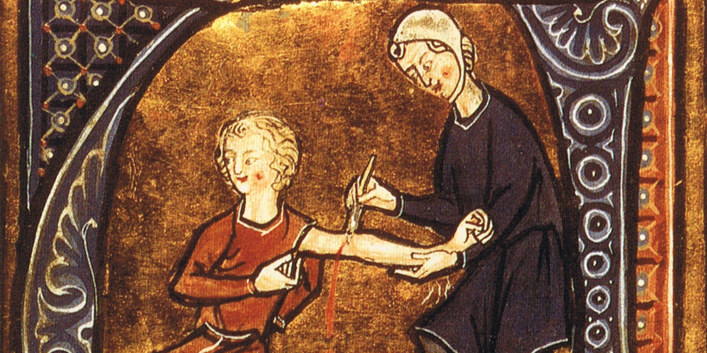

Az orvosi megismerés módszertana (és az orvosi kutatások kritikus értékelése)
Előszó

Manapság mind az érdeklődő laikusokra, mind az orvosokra, szakdolgozókra csak úgy zúdulnak a különféle egészségügyi, orvosi információk, melyeket a helyükön kell(ene) kezelni. Tényleg csökkenti-e a vérnyomást ez a vérnyomás-csökkentő gyógyszerjelölt? Okozhat-e agyvérzést mint mellékhatás? A vöröshús-fogyasztás valóban növeli a rákkockázatot? A császármetszéssel születés vezethet 1-es típusú cukorbetegséghez? Ahhoz, hogy értsük, hogy e kérdéseket hogyan lehet empirikusan megválaszolni, és ahhoz, hogy az ilyeneket megválaszoló kutatásokat értelmezni, értékelni és kritikusan értékelni tudjuk, az empirikus kutatások módszertani alapjait kell ismerni. Ez már ma is fontos, és napról-napra csak egyre fontosabb lesz, mégpedig nem csak minden orvos és egészségügyis, de minden, a sajtóban olvasottakat valóban megérteni vágyó érdeklődő számára.
(Tapasztalataim szerint ez az orvosoknak sem könnyű: az „evidence-based medicine” varázsszóként terjedése ellenére számos orvos valójában nem rendelkezik kellő jártassággal e téren. Nem az ő hibájukból: az egyetemi biostatisztika oktatás inkább arra készít fel, hogy hogyan kell számokat gyártani, nem arra, hogy a mások által gyártott számokat hogyan kell értelmezni, értékelni.)
A fenti motivációból fakadóan szívügyem e témakör bemutatása. Nem, ez nem „biostatisztika”, legalábbis abban az értelemben, amit a legtöbb orvos ért ez alatt, nem képletek, levezetések és bizonyítások lesznek ebben a jegyzetben. Ha már mindenképp címkéznünk kell, akkor módszertan. Ahogy írtam is, ennek ismerete – szemben a biostatisztikával – véleményem szerint kivétel nélkül minden orvosnak, egészségügyi területen dolgozónak és minden érdeklődő laikusnak fontos, aki orvosi kutatások eredményeit olvassa és akarja megérteni; ehhez próbálok segítséget nyújtani e jegyzettel. A nyelvezete, felépítése olyan, hogy reményeim szerint minden különösebb előismeret, és orvosi tudás nélkül is végig követhető.
Különösen fontosnak tartom az orvosi kutatások kritikus értékelésének témakörét: mik a tipikus buktatók, csapdák, jóhiszemű és kevésbé jóhiszemű félreértési, félrevezetési lehetőségek. Sajnos e terület mágnesként vonzza mind félreértéseket, mind a szándékos félrevezetéseket, valószínűleg nem függetlenül attól, hogy sok részterülete van, amihez ideológiailag nagyon motivált szereplők szólnak hozzá, illetve amelyek mögött komoly anyagi érdekek is megjelennek.
Remélem, hogy ez a jegyzet segítséget nyújt abban, hogy az olvasó mindezek ellenére mégis magabiztosabban tudjon navigálni az ilyen információk áradatában.
Az anyaggal kapcsolatban minden észrevételt, javaslatot, kritikát örömmel várok a tamas.ferenci@medstat.hu email-címen!
Ez a jegyzet az Interpress Magazinban megjelent cikksorozatom kibővített, szerkesztett változata.
A dolgozathoz adott segítségükért szeretnék köszönetet mondani (alfabetikus sorrendben) Szilágyi Eszter Szabinának és Tóth Andrásnak.